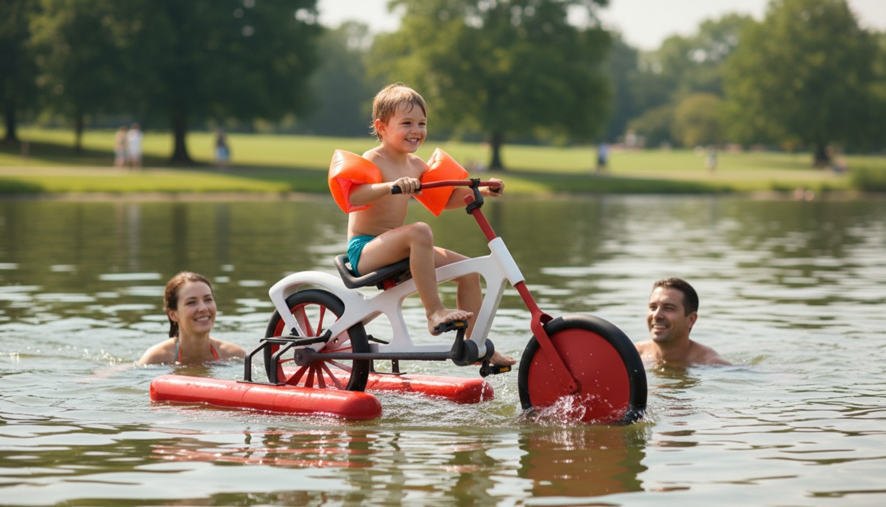
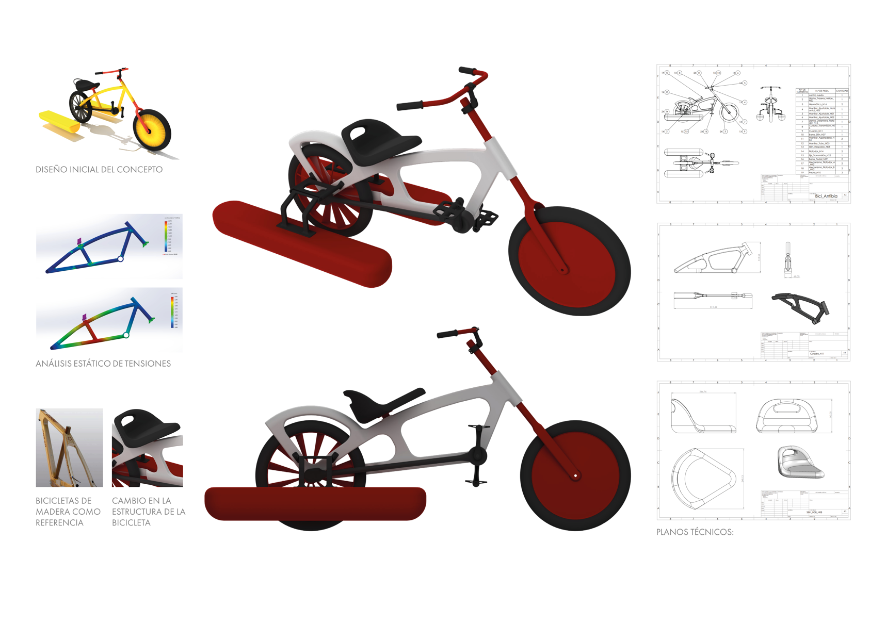

Children's
Amphibian
Bicycle
Project Overview
A tutored group project for the subject of Business Administration and Industrial Organisation. The team designed and developed a children's amphibious bicycle capable of operating on both land and water — combining the adventure of cycling with the excitement of water sports.
Team
Antonio García Fernández · Raquel Hernández Eiroa · Jorge Fraga Rodríguez · Noela Mato López
Design Development
The design went through multiple iterations: an initial concept using a wooden frame (referencing balance bike aesthetics), followed by a revised metal frame structure informed by static stress analysis. The final form adopts a chopper-inspired silhouette with integrated pontoon flotation and a distinctive large rear wheel.
Engineering Analysis
A static stress analysis (FEA) was performed on the frame geometry using SolidWorks Simulation, validating the structural performance under combined load cases (child weight + water forces). The analysis informed the final frame cross-section and joint design decisions.
Technical Documentation
Full technical package produced: assembly drawing with BOM (15+ components), individual part drawings (frame, fork, saddle), and rendered 3D views in SolidWorks.
